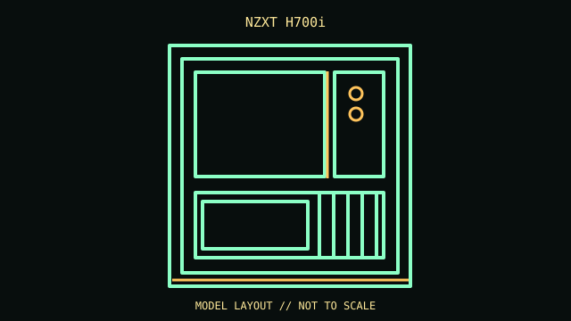

[ IDENTIFIED ENCLOSURE // ATX/E-ATX SMART MID-TOWER ]
NZXT H700i
230 × 516 × 494 mm (W × H × D, feet included); ATX/E-ATX smart mid-tower. Board fit: Mini-ITX, microATX, ATX and E-ATX up to 272 mm wide; seven horizontal slots and two vertical positions. GPU: Up to 413 mm with front fans installed; check front radiator thickness and vertical-mount/riser requirements. CPU cooler: 185 mm maximum CPU-cooler height. Radiator: Front and top up to 360 mm; rear up to 140 mm. Simultaneous radiator thickness depends on motherboard and fans. PSU: ATX PSU up to 200 mm with the cable-management bar in place.

REVISION / CONFIGURATION CAVEAT: H700i includes the Smart Device fan/RGB controller; it differs from the H700 and later H7 product family. Confirm all tray count and accessory claims against the CA-H700W SKU.
Mechanical specifications and fit
| Exact model | NZXT H700i — ATX/E-ATX smart mid-tower. |
|---|---|
| Dimensions and construction | 230 × 516 × 494 mm (W × H × D, feet included); see cited manufacturer page/manual for measured envelope and revision-specific detail. |
| Motherboard form-factor fit | Mini-ITX, microATX, ATX and E-ATX up to 272 mm wide; seven horizontal slots and two vertical positions. |
| GPU clearance | Up to 413 mm with front fans installed; check front radiator thickness and vertical-mount/riser requirements. |
| CPU-cooler clearance | 185 mm maximum CPU-cooler height. |
| Radiator clearance | Front and top up to 360 mm; rear up to 140 mm. Simultaneous radiator thickness depends on motherboard and fans. |
| PSU clearance | ATX PSU up to 200 mm with the cable-management bar in place. |
| Drive mounts | Three 3.5-inch trays and seven 2.5-inch positions (some 2.5-inch trays share 3.5-inch mounting locations). |
Compatibility and service notes
Preserve the controller, LED strips, cable bar, vertical slot covers and drive trays. Power/cable routing competes with long PSU bodies and the drive cage.
- Check GPU length and thickness, its power-plug bend, cooler height and radiator/fan assembly against the same installed configuration; advertised maxima may conflict.
- Confirm motherboard standoffs match the board holes and inspect front-panel, USB and fan-controller headers before powering the build.
- Record the exact SKU, manual revision, removed brackets and unused drive hardware. Measure the individual chassis before shipping or fitting nonstandard parts.
Manufacturer and manual sources
- NZXT H700/H700i — manufacturer support and compatibility referenceManufacturer product/model page; use the SKU and configuration that match the specimen.
- NZXT — H700i installation manual (CA-H700W family)Model-specific installation/manual reference for mounting diagrams and configuration limits.
Clearance limits describe separate manufacturer fit conditions; they are not a promise that all maximum-size parts fit simultaneously. Confirm the exact revision before purchase or installation.